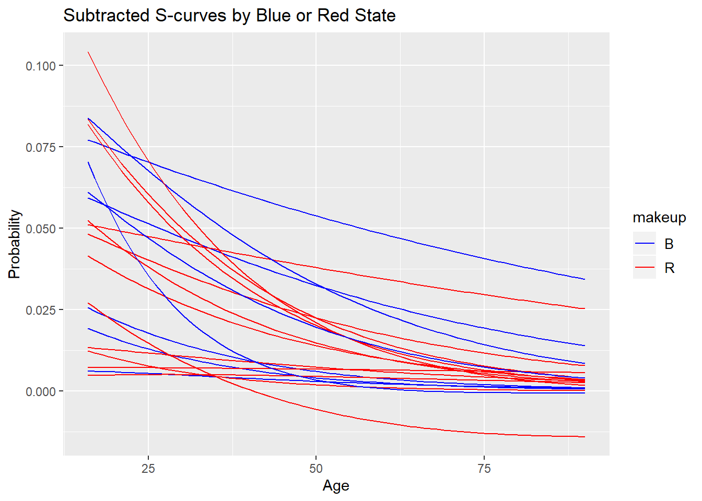
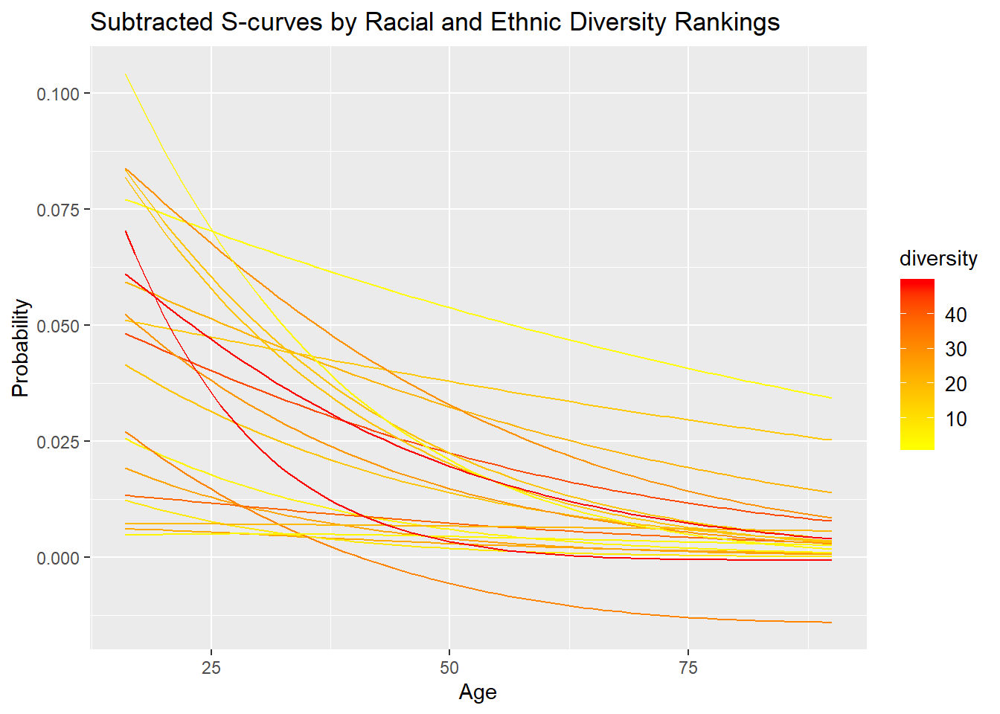

Chapter 6 Stop Outcomes in San Diego
CAsd1 <- DBI::dbGetQuery(con1, "SELECT raw_row_number, arrest_made, citation_issued, warning_issued, search_conducted, search_person, search_vehicle FROM CAsandiego")
CAsd2 <- DBI::dbGetQuery(con2, "SELECT raw_row_number, date, time, service_area, subject_age, subject_race, subject_sex, type, outcome, reason_for_stop, raw_action_taken, raw_subject_race_description FROM CAsandiego")6.0.0.1 Plotting Count by Race over years 2014-2017
goodSD %>%
count(year = year(date), raw_subject_race_description) %>%
ggplot(aes(x = year, y = n, color = raw_subject_race_description)) +
geom_point() +
geom_line()## Warning: Removed 1 rows containing missing values (geom_point).## Warning: Removed 1 rows containing missing values (geom_path).
6.0.0.1.1 Recoding Race column
# in SD, subject race was very detailed and consistant unlike other datasets
# thus, recoded raw_subject_race_description for 'ASIAN/PACIFIC ISLANDER'
goodSD$raw_subject_race_description <-recode(goodSD$raw_subject_race_description, "VIETNAMESE"="ASIAN/PACIFIC ISLANDER",
"SAMOAN"="ASIAN/PACIFIC ISLANDER",
"LAOTIAN"="ASIAN/PACIFIC ISLANDER",
"KOREAN"="ASIAN/PACIFIC ISLANDER",
"JAPANESE"="ASIAN/PACIFIC ISLANDER",
"INDIAN"="ASIAN/PACIFIC ISLANDER",
"HAWAIIAN"="ASIAN/PACIFIC ISLANDER",
"GUAMANIAN"="ASIAN/PACIFIC ISLANDER",
"FILIPINO"="ASIAN/PACIFIC ISLANDER",
"CHINESE"="ASIAN/PACIFIC ISLANDER",
"CAMBODIAN"="ASIAN/PACIFIC ISLANDER",
"ASIAN INDIAN"="ASIAN/PACIFIC ISLANDER",
"OTHER ASIAN"="ASIAN/PACIFIC ISLANDER",
"PACIFIC ISLANDER"="ASIAN/PACIFIC ISLANDER")6.0.0.2 Plotting Search Conducted by Race
It is helpful to look at the distribution of stop outcomes because it could suggest underlying intent from the officer or commonalities in policing different races (i.e. prevalence of profiled searches, warrant for arrest). The following two visualizations display the distribution of searches and arrests made on traffic stops in San Diego.
# create a new dataset
SearchesByRaceCOL <- goodSD %>%
# select race and search_conducted columns
group_by(raw_subject_race_description, search_conducted) %>%
# calculate count for search_conducted by race
summarize(Total =n()) %>%
group_by(raw_subject_race_description) %>%
mutate(pct=Total/sum(Total))
data.table(SearchesByRaceCOL)## raw_subject_race_description search_conducted Total pct
## 1: ASIAN/PACIFIC ISLANDER FALSE 31147 0.97203757
## 2: ASIAN/PACIFIC ISLANDER TRUE 896 0.02796243
## 3: BLACK FALSE 38217 0.90949548
## 4: BLACK TRUE 3803 0.09050452
## 5: HISPANIC FALSE 108932 0.94456536
## 6: HISPANIC TRUE 6393 0.05543464
## 7: OTHER FALSE 26420 0.98350892
## 8: OTHER TRUE 443 0.01649108
## 9: WHITE FALSE 155130 0.97223006
## 10: WHITE TRUE 4431 0.02776994
## 11: <NA> FALSE 6893 0.95537076
## 12: <NA> TRUE 322 0.04462924# omit NAs for search_conducted
SearchesByRaceCOL <- na.omit(SearchesByRaceCOL)
# visualize proportion of searches to non-search stops
ggplot(SearchesByRaceCOL, aes(x=raw_subject_race_description, y=pct, fill=search_conducted))+ geom_col() + coord_flip() + ggtitle("Search Conducted by Race")
6.0.0.3 Plotting Search Person by Race
## raw_subject_race_description search_person Total pct
## 1: ASIAN/PACIFIC ISLANDER FALSE 31470 0.982117779
## 2: ASIAN/PACIFIC ISLANDER NA 116 0.003620135
## 3: ASIAN/PACIFIC ISLANDER TRUE 457 0.014262085
## 4: BLACK FALSE 39630 0.943122323
## 5: BLACK NA 417 0.009923846
## 6: BLACK TRUE 1973 0.046953832
## 7: HISPANIC FALSE 111919 0.970466074
## 8: HISPANIC NA 762 0.006607414
## 9: HISPANIC TRUE 2644 0.022926512
## 10: OTHER FALSE 26630 0.991326360
## 11: OTHER NA 76 0.002829170
## 12: OTHER TRUE 157 0.005844470
## 13: WHITE FALSE 156744 0.982345310
## 14: WHITE NA 755 0.004731733
## 15: WHITE TRUE 2062 0.012922957
## 16: <NA> FALSE 7020 0.972972973
## 17: <NA> NA 64 0.008870409
## 18: <NA> TRUE 131 0.018156618
6.0.0.4 Plotting Search Vehicle by Race
## raw_subject_race_description search_vehicle Total pct
## 1: ASIAN/PACIFIC ISLANDER FALSE 31400 0.979933215
## 2: ASIAN/PACIFIC ISLANDER NA 116 0.003620135
## 3: ASIAN/PACIFIC ISLANDER TRUE 527 0.016446650
## 4: BLACK FALSE 39200 0.932889100
## 5: BLACK NA 417 0.009923846
## 6: BLACK TRUE 2403 0.057187054
## 7: HISPANIC FALSE 110313 0.956540212
## 8: HISPANIC NA 762 0.006607414
## 9: HISPANIC TRUE 4250 0.036852374
## 10: OTHER FALSE 26513 0.986970927
## 11: OTHER NA 76 0.002829170
## 12: OTHER TRUE 274 0.010199903
## 13: WHITE FALSE 156344 0.979838432
## 14: WHITE NA 755 0.004731733
## 15: WHITE TRUE 2462 0.015429836
## 16: <NA> FALSE 6968 0.965765766
## 17: <NA> NA 64 0.008870409
## 18: <NA> TRUE 183 0.025363825
6.0.0.5 Plotting Arrest Made by Race
## raw_subject_race_description arrest_made Total pct
## 1: ASIAN/PACIFIC ISLANDER FALSE 29262 0.913210374
## 2: ASIAN/PACIFIC ISLANDER NA 2476 0.077271167
## 3: ASIAN/PACIFIC ISLANDER TRUE 305 0.009518460
## 4: BLACK FALSE 37953 0.903212756
## 5: BLACK NA 3215 0.076511185
## 6: BLACK TRUE 852 0.020276059
## 7: HISPANIC FALSE 100404 0.870617819
## 8: HISPANIC NA 13224 0.114667245
## 9: HISPANIC TRUE 1697 0.014714936
## 10: OTHER FALSE 24066 0.895879090
## 11: OTHER NA 2638 0.098201988
## 12: OTHER TRUE 159 0.005918922
## 13: WHITE FALSE 145399 0.911243976
## 14: WHITE NA 12416 0.077813501
## 15: WHITE TRUE 1746 0.010942524
## 16: <NA> FALSE 6385 0.884961885
## 17: <NA> NA 774 0.107276507
## 18: <NA> TRUE 56 0.0077616086.0.0.6 Plotting Citations Issued by Race
## raw_subject_race_description citation_issued Total pct
## 1: ASIAN/PACIFIC ISLANDER FALSE 12496 0.38997597
## 2: ASIAN/PACIFIC ISLANDER NA 1937 0.06045002
## 3: ASIAN/PACIFIC ISLANDER TRUE 17610 0.54957401
## 4: BLACK FALSE 19105 0.45466445
## 5: BLACK NA 2566 0.06106616
## 6: BLACK TRUE 20349 0.48426940
## 7: HISPANIC FALSE 36667 0.31794494
## 8: HISPANIC NA 12041 0.10440928
## 9: HISPANIC TRUE 66617 0.57764578
## 10: OTHER FALSE 7263 0.27037189
## 11: OTHER NA 2475 0.09213416
## 12: OTHER TRUE 17125 0.63749395
## 13: WHITE FALSE 52240 0.32739830
## 14: WHITE NA 12377 0.07756908
## 15: WHITE TRUE 94944 0.59503262
## 16: <NA> FALSE 2148 0.29771310
## 17: <NA> NA 575 0.07969508
## 18: <NA> TRUE 4492 0.622591826.0.0.7 Plotting Warnings Issued by Race
## raw_subject_race_description warning_issued Total pct
## 1: ASIAN/PACIFIC ISLANDER FALSE 18313 0.57151328
## 2: ASIAN/PACIFIC ISLANDER NA 1937 0.06045002
## 3: ASIAN/PACIFIC ISLANDER TRUE 11793 0.36803670
## 4: BLACK FALSE 22953 0.54623989
## 5: BLACK NA 2566 0.06106616
## 6: BLACK TRUE 16501 0.39269396
## 7: HISPANIC FALSE 69890 0.60602645
## 8: HISPANIC NA 12041 0.10440928
## 9: HISPANIC TRUE 33394 0.28956427
## 10: OTHER FALSE 17356 0.64609314
## 11: OTHER NA 2475 0.09213416
## 12: OTHER TRUE 7032 0.26177270
## 13: WHITE FALSE 97389 0.61035591
## 14: WHITE NA 12377 0.07756908
## 15: WHITE TRUE 49795 0.31207501
## 16: <NA> FALSE 4485 0.62162162
## 17: <NA> NA 575 0.07969508
## 18: <NA> TRUE 2155 0.298683306.0.0.8 Distribution of NAs in outcome variables
#search_conducted vs. arrest_made, citation_issued, warning_issued
table(goodSD$search_conducted,goodSD$arrest_made)##
## FALSE NA TRUE
## FALSE 331180 34642 917
## TRUE 12289 101 3898##
## FALSE NA TRUE
## FALSE 122819 31235 212685
## TRUE 7100 736 8452##
## FALSE NA TRUE
## FALSE 217781 31235 117723
## TRUE 12605 736 2947#search_person vs. arrest_made, citation_issued, warning_issued
table(goodSD$search_person,goodSD$arrest_made)##
## FALSE NA TRUE
## FALSE 337245 34666 1502
## NA 1483 51 656
## TRUE 4741 26 2657##
## FALSE NA TRUE
## FALSE 124552 31364 217497
## NA 756 252 1182
## TRUE 4611 355 2458##
## FALSE NA TRUE
## FALSE 223434 31364 118615
## NA 1526 252 412
## TRUE 5426 355 1643#search_vehicle vs. arrest_made, citation_issued, warning_issued
table(goodSD$search_vehicle,goodSD$arrest_made)##
## FALSE NA TRUE
## FALSE 333675 34662 2401
## NA 1483 51 656
## TRUE 8311 30 1758##
## FALSE NA TRUE
## FALSE 125189 31467 214082
## NA 756 252 1182
## TRUE 3974 252 5873##
## FALSE NA TRUE
## FALSE 220741 31467 118530
## NA 1526 252 412
## TRUE 8119 252 1728##
## FALSE NA TRUE
## FALSE 366739 0 0
## TRUE 3999 2190 10099##
## FALSE NA TRUE
## FALSE 366739 0 0
## TRUE 6674 2190 7424##
## FALSE NA TRUE
## FALSE 366739 0 6674
## NA 0 2190 0
## TRUE 3999 0 3425